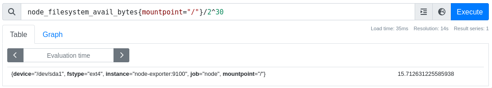

Alertmanager
В данном практическом занятии познакомимся с компонентом для организации уведомлений о событиях мониторинга в системе prometheus - alertmanager.
Vagrant
Для работы будем использовать следующий Vagrantfile:
Vagrant.configure("2") do |config|
config.vm.define "prometheus" do |c|
c.vm.box = "ubuntu/lunar64"
c.vm.hostname = "prometheus"
c.vm.network "forwarded_port", guest: 8888, host: 8888
c.vm.network "forwarded_port", guest: 8889, host: 8889
c.vm.provision "shell", inline: <<-SHELL
apt-get update -q
apt-get install -yq docker.io docker-compose-v2
usermod -a -G docker vagrant
SHELL
end
end
Данная конфигурация установит на виртуальную машину docker и docker compose, с помощью которых в дальнейшем будут развернуты остальные компоненты.
Alertmanager
Для развертывания компонентов опишем compose.yaml файл:
name: mon
services:
prometheus:
image: prom/prometheus:v2.50.1
ports:
- 8889:9090
volumes:
- ./prometheus.yml:/etc/prometheus/prometheus.yml
- ./rules.yaml:/etc/prometheus/rules.yaml
- prometheus_data:/prometheus
alertmanager:
image: prom/alertmanager:v0.27.0
ports:
- 8888:9093
node-exporter:
image: prom/node-exporter:v1.7.0
command:
- '--path.procfs=/host/proc'
- '--path.rootfs=/rootfs'
- '--path.sysfs=/host/sys'
- '--collector.filesystem.mount-points-exclude=^/(sys|proc|dev|host|etc)($$|/)'
volumes:
- /proc:/host/proc:ro
- /sys:/host/sys:ro
- /:/rootfs:ro
volumes:
prometheus_data: {}
Данная конфигурация развернет контейнеры prometheus, node-exporter
и alertmanager.
Также нам понадобится конфигурация prometheus.yml, в которой мы опишем
получение метрик с node-exporter и подключение алертинга к alertmanager.
global:
scrape_interval: 15s
scrape_configs:
- job_name: 'prometheus'
scrape_interval: 1m
static_configs:
- targets: ['localhost:9090']
- job_name: 'node'
static_configs:
- targets: ['node-exporter:9100']
rule_files:
- rules.yaml
alerting:
alertmanagers:
- static_configs:
- targets:
- alertmanager:9093
А также необходим файл с правилами, по которым будут формироваться события -
rules.yaml:
groups:
- name: example
rules:
- alert: HighFilesystemUsage
expr: node_filesystem_avail_bytes{mountpoint="/"}/node_filesystem_size_bytes < 0.6
for: 1m
labels:
severity: warn
annotations:
summary: Filesystem Usage
После чего запустим docker compose:
$ docker compose up -d
[+] Running 3/3
✔ Container mon-prometheus-1 Started 0.8s
✔ Container mon-node-exporter-1 Started 0.9s
✔ Container mon-alertmanager-1 Started 0.9s
Нам станут доступны prometheus по адресу localhost:8889 и alertmanager по адресу localhost:8888. На странице status можно увидеть, что prometheus подключен к alertmanager:
А на странице rules наши правила:
Сам же alertmanager сейчас не содержит алертов:
Trigger Alert
Возьмем метрику, для которой мы описали правило - node_filesystem_avail_bytes
Смотреть метрики можно также через http api:
$ curl -s localhost:8889/api/v1/query --data-urlencode 'query=node_filesystem_avail_bytes{mountpoint="/"}/2^30' | jq -c '.data.result[] | [.metric,.value[1]]'
[{"device":"/dev/sda1","fstype":"ext4","instance":"node-exporter:9100","job":"node","mountpoint":"/"},"35.24398422241211"]
Посмотрим на размер корневой файловой системы и заполним его таким образом, чтобы сработало правило алертинга:
$ df -h /
Filesystem Size Used Avail Use% Mounted on
/dev/sda1 39G 3.5G 36G 9% /
$ dd if=/dev/zero of=big_file status=progress bs=1M count=20000
20908605440 bytes (21 GB, 19 GiB) copied, 24 s, 871 MB/s
20000+0 records in
20000+0 records out
20971520000 bytes (21 GB, 20 GiB) copied, 24.0671 s, 871 MB/s
$ df -h /
Filesystem Size Used Avail Use% Mounted on
/dev/sda1 39G 23G 16G 60% /
Убедимся, что в мониторинге отразилось новое значение:

Через некоторое время на странице alerts можно будет
увидеть алерт в состоянии Pending:
В данное состояние он переходит после попадание под выражение в нашем правиле, а
спустя время, указанное в параметре for, алерт перейдет в состояние Firing:
После чего окажется в alertmanager:
Теперь можно удалить файл:
$ rm big_file
После чего спустя некоторое время алерт пропадет:
Route Alert
На текущий момент alertmanager не сконфигурирован для отправки уведомлений ко внешним
получателям. Alertmanager позволяет настроить правила маршрутизации событий к разным
потребителям на основе их атрибутов, а также позволяет задать получателя по-умолчанию.
Зададим конфигурацию с отправкой событий в telegram бота в файле alertmanager.yml:
route:
group_by: ['alertname']
group_wait: 30s
group_interval: 1m
repeat_interval: 24h
receiver: telegram
receivers:
- name: telegram
telegram_configs:
- bot_token: <token>
chat_id: <chat_id>
Для получения bot_token можно обратиться к @BotFather,
чтобы создать нового бота или получить токен существующего. А для получения
chat_id можно написать сообщение боту и сделать запрос из терминала:
$ token=<токен бота>
$ curl https://api.telegram.org/bot${token}/getUpdates
Где в ответе в поле id будет искомое значение.
После задания конфигурации обновим compose.yaml:
name: mon
services:
prometheus:
image: prom/prometheus:v2.50.1
ports:
- 8889:9090
volumes:
- ./prometheus.yml:/etc/prometheus/prometheus.yml
- ./rules.yaml:/etc/prometheus/rules.yaml
- prometheus_data:/prometheus
alertmanager:
image: prom/alertmanager:v0.27.0
volumes:
- ./alertmanager.yml:/etc/alertmanager/alertmanager.yml
ports:
- 8888:9093
node-exporter:
image: prom/node-exporter:v1.7.0
command:
- '--path.procfs=/host/proc'
- '--path.rootfs=/rootfs'
- '--path.sysfs=/host/sys'
- '--collector.filesystem.mount-points-exclude=^/(sys|proc|dev|host|etc)($$|/)'
volumes:
- /proc:/host/proc:ro
- /sys:/host/sys:ro
- /:/rootfs:ro
volumes:
prometheus_data: {}
И перезапустим:
$ docker compose up -d
[+] Running 3/3
✔ Container mon-prometheus-1 Running 0.0s
✔ Container mon-alertmanager-1 Started 0.9s
✔ Container mon-node-exporter-1 Running 0.0s
Попробуем снова спровоцировать алерт:
$ dd if=/dev/zero of=big_file status=progress bs=1M count=20000
20248002560 bytes (20 GB, 19 GiB) copied, 22 s, 920 MB/s
20000+0 records in
20000+0 records out
20971520000 bytes (21 GB, 20 GiB) copied, 22.7681 s, 921 MB/s
Спустя некоторое время в наш бот придет уведомление:
После чего мы можем очистить место и увидеть сообщение о разрешении алерта:
$ rm big_file
Inhibit Alert
На текущий момент наш алерт оповещает нас о нехватке места на файловой системе
с уровнем критичности(severity) - warn(warning), чтобы мы по возможности обратили на
это внимание. Добавим также правило с критичностью crit(critical), когда нам
точно необходимо совершить какие-либо действия для устранения проблемы. Для этого
допишем файл rules.yaml:
groups:
- name: example
rules:
- alert: HighFilesystemUsage
expr: node_filesystem_avail_bytes{mountpoint="/"}/node_filesystem_size_bytes < 0.6
for: 1m
labels:
severity: warn
annotations:
summary: Filesystem Usage
- alert: HighFilesystemUsage
expr: node_filesystem_avail_bytes{mountpoint="/"}/node_filesystem_size_bytes < 0.3
for: 1m
labels:
severity: crit
annotations:
summary: Filesystem Usage
И перезапустим:
$ docker compose up -d --force-recreate
[+] Running 3/3
✔ Container mon-prometheus-1 Started 1.1s
✔ Container mon-alertmanager-1 Started 1.1s
✔ Container mon-node-exporter-1 Started 1.1s

После чего запишем файл еще большего размера, чтобы на файловой системе было мене 30% свободного места:
$ dd if=/dev/zero of=big_file status=progress bs=1M count=30000
30915166208 bytes (31 GB, 29 GiB) copied, 33 s, 937 MB/s
30000+0 records in
30000+0 records out
31457280000 bytes (31 GB, 29 GiB) copied, 33.5849 s, 937 MB/s
Спустя некоторое время придет сообщение от бота:
Как видно в сообщении мы получили сразу два алерта crit и warn, так как текущее
состояние метрики подходит под оба правила. Для того, чтобы подавить отправку событий
важности warn, когда у нас есть события более высокой важности crit можно
воспользоваться inhibition_rules в конфигурации alertmanager.
Очистим место на файловой системе и дождемся очистки алертов:
$ rm big_file
$ df -h /
Filesystem Size Used Avail Use% Mounted on
/dev/sda1 39G 3.5G 36G 9% /
После чего добавим в конфигурацию alertmanager.yml:
route:
group_by: ['alertname']
group_wait: 30s
group_interval: 1m
repeat_interval: 24h
receiver: telegram
inhibit_rules:
- source_matchers: [severity="crit"]
target_matchers: [severity="warn"]
equal: [alertname]
receivers:
- name: telegram
telegram_configs:
- bot_token: 5930109659:AAHcdB9urrAyJOqxoZxIs1qhlNJXu25vsPs
chat_id: 184542544
Перезапустим контейнеры и загрузим файловую систему:
$ curl -s localhost:8889/api/v1/query --data-urlencode 'query=ALERTS'
{"status":"success","data":{"resultType":"vector","result":[]}}
$ docker compose up -d --force-recreate
[+] Running 3/3
✔ Container mon-prometheus-1 Started 1.1s
✔ Container mon-alertmanager-1 Started 1.0s
✔ Container mon-node-exporter-1 Started 1.0s
$ dd if=/dev/zero of=big_file status=progress bs=1M count=30000
31136415744 bytes (31 GB, 29 GiB) copied, 35 s, 890 MB/s
30000+0 records in
30000+0 records out
31457280000 bytes (31 GB, 29 GiB) copied, 35.366 s, 889 MB/s
Через некоторое время получим сообщение от бота:
Теперь мы получили только один алерт важности crit, который подавил генерацию
события важности warn.
После чего можем опять очистить файловую систему:
$ rm big_file
Silence Alert
Если в какие-то моменты необходимо временно отключить получение алертов, например
при плановом обслуживании, то можно воспользоваться механизмом
silences, где нажав New Silence можно создать
правило, под которое попадают алерты и временно их отключить:
Заполним данные, чтобы заглушить алерты важности crit:

И снова заполним файловую систему:
$ dd if=/dev/zero of=big_file status=progress bs=1M count=30000
30835474432 bytes (31 GB, 29 GiB) copied, 33 s, 934 MB/s
30000+0 records in
30000+0 records out
31457280000 bytes (31 GB, 29 GiB) copied, 33.6948 s, 934 MB/s
Теперь мы не получим уведомления, а спустя некоторое время можем увидеть
в интерфейсе alertmanager наши алерты в inhibited и silenced состояниях: